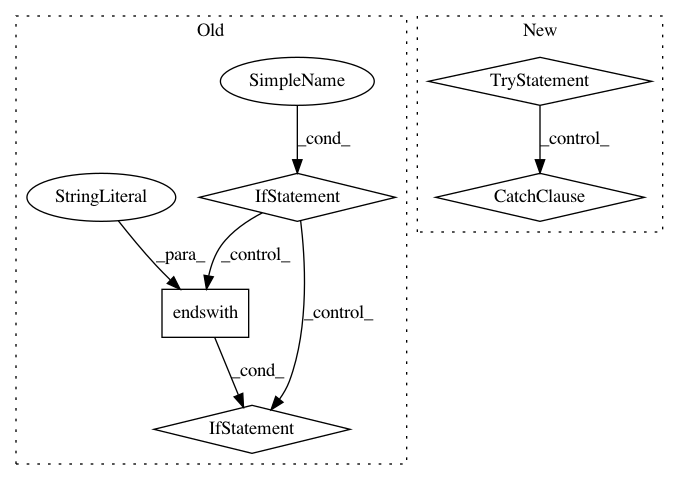

d2d1cdf874afa7b8aa7f5bf8d764f7b1bd2f9f10,src/sagemaker/utils.py,,_create_or_update_code_dir,#Any#Any#Any#Any#Any#Any#,524
Before Change
tmp:
code_dir = os.path.join(model_dir, "code")
if os.path.exists(code_dir):
for filename in os.listdir(code_dir):
if filename.endswith(".py"):
os.remove(os.path.join(code_dir, filename))
if source_directory and source_directory.lower().startswith("s3://"):
local_code_path = os.path.join(tmp, "local_code.tar.gz")
download_file_from_url(source_directory, local_code_path, sagemaker_session)
After Change
else:
if not os.path.exists(code_dir):
os.mkdir(code_dir)
try:
shutil.copy2(inference_script, code_dir)
except FileNotFoundError:
if os.path.exists(os.path.join(code_dir, inference_script)):
pass
else:
raise
for dependency in dependencies:
lib_dir = os.path.join(code_dir, "lib")
if os.path.isdir(dependency):
shutil.copytree(dependency, os.path.join(lib_dir, os.path.basename(dependency)))
In pattern: SUPERPATTERN
Frequency: 3
Non-data size: 5
Instances
Project Name: aws/sagemaker-python-sdk
Commit Name: d2d1cdf874afa7b8aa7f5bf8d764f7b1bd2f9f10
Time: 2020-05-04
Author: chuyangdeng@gmail.com
File Name: src/sagemaker/utils.py
Class Name:
Method Name: _create_or_update_code_dir
Project Name: thenetcircle/dino
Commit Name: dfae0dae92e64b05a2dd129a4ad46ab53b7aa0fa
Time: 2016-10-27
Author: oscar.eriks@gmail.com
File Name: dino/utils/__init__.py
Class Name:
Method Name: ban_duration_to_timestamp
Project Name: aertslab/pySCENIC
Commit Name: d23794e515aac062b94c9e492143d97ec55c9cc9
Time: 2018-12-14
Author: vandesande.bram@gmail.com
File Name: src/pyscenic/cli/pyscenic.py
Class Name:
Method Name: aucell_command